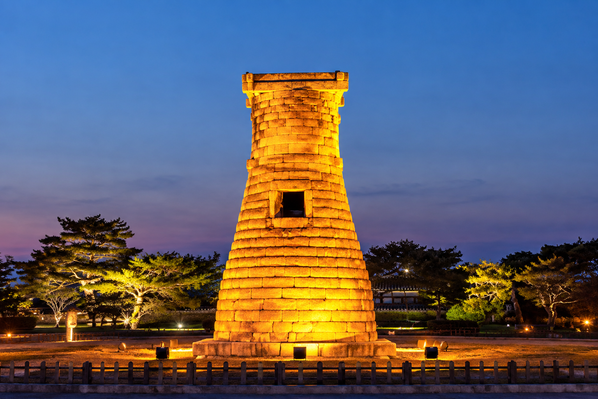
📍 국보 제31호 · 랜드마크
천년의 향기가 머무는 경주에서, 사랑하는 온 가족 5명이 모여
아버님의 빛나는 인생 2막을 뜨겁게 축복합니다.
사랑과 웃음이 가득한 우리 가족, 평생 간직할 아름다운 추억을 함께 만듭니다.
우리 가족의 든든한 큰 나무이자 영원한 캡틴! 60번째 생신을 진심으로 축하드립니다 ❤️
따뜻한 손길과 온화한 미소로 언제나 우리 가족의 든든한 행복을 가꿔주시는 수호천사 🌸
아빠의 자랑스러운 맏딸! 인생의 새로운 출발을 앞두고 아빠의 환갑을 가장 기쁘게 축하합니다.
아버님 어머님의 든든한 새로운 가족! 정은이와 함께 평생 효도하며 행복한 가정을 이루겠습니다.
유쾌한 에너지로 여행 분위기를 책임지는 든든한 아들! 아버지 인생 60부터 파이팅입니다!
숙소 '스테이 시래'와 8대 관광지, 수리뫼·부부수산·프라메리 케이크 등 모든 스팟을 한 장의 지도에서 확인하세요.
최고의 컨디션을 자랑하는 불국사 인근 감성 독채 한옥 '스테이 시래'에서 오붓한 대게 만찬과 환갑 파티를 엽니다.
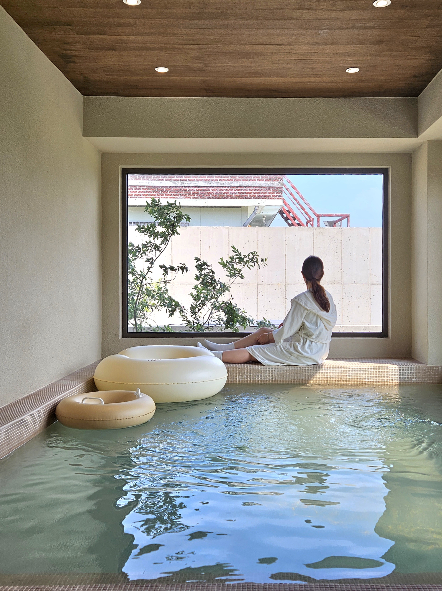
신라의 옛 정취와 모던한 감성이 공존하는 프라이빗 독채 한옥 숙소입니다. 숙소 컨디션이 매우 훌륭하여, 첫날 15시 프라메리에서 픽업한 환갑 맞춤 케이크와 감포 부부수산에서 포장해 온 싱싱한 대게·모듬회 세트로 우리 가족만의 프라이빗하고 럭셔리한 환갑 축하 만찬을 즐기기에 더할 나위 없이 완벽합니다.
모든 장소는 실제 경주 현장 사진으로 연결되어 있으며, 버튼을 누르면 카카오맵과 네이버 지도로 바로 길찾기가 연결됩니다.

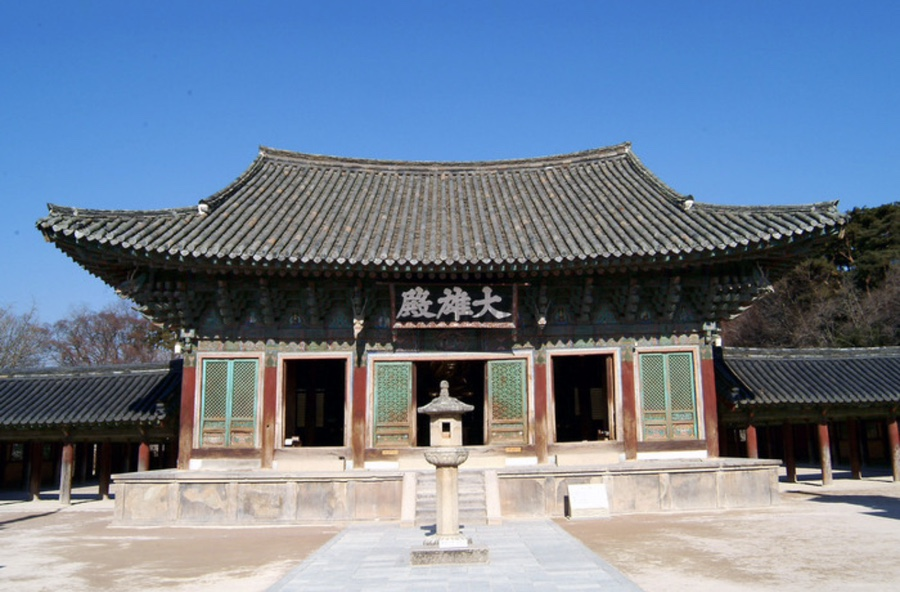
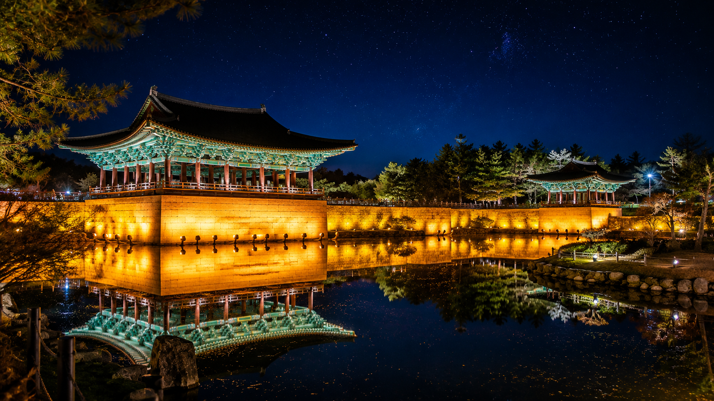
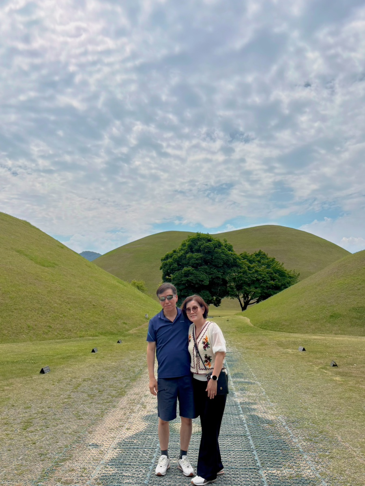
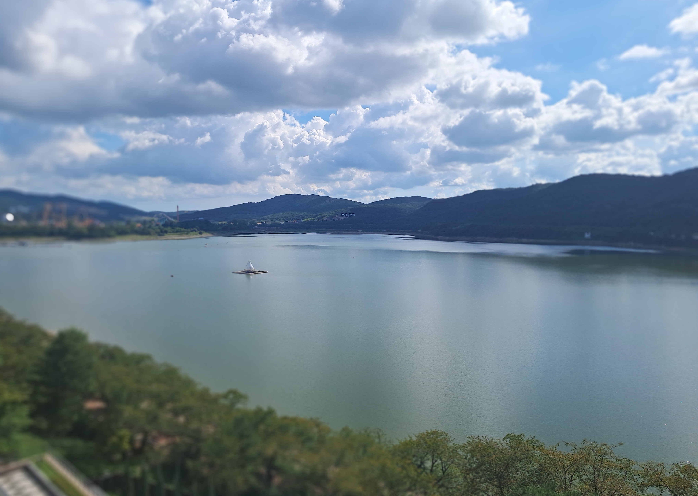
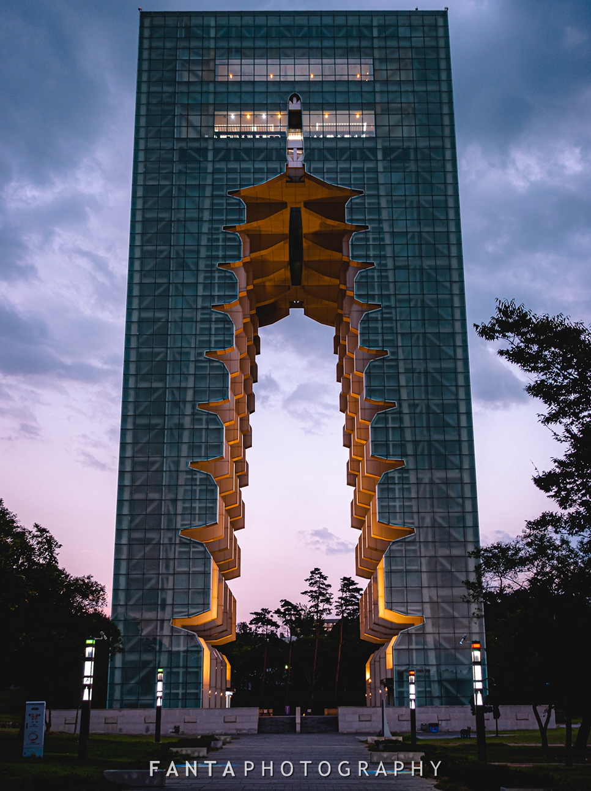
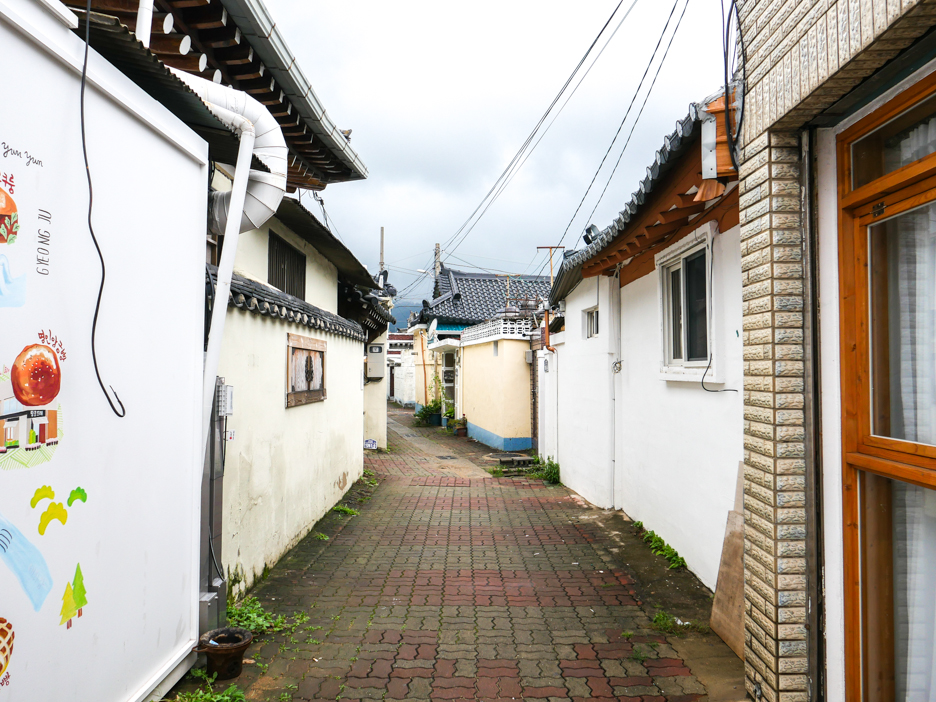
첫날 수리뫼 궁중 한정식 점심과 15시 프라메리 맞춤 케이크 픽업, 부부수산 대게 파티까지 실제 메뉴 사진으로 확인하세요.
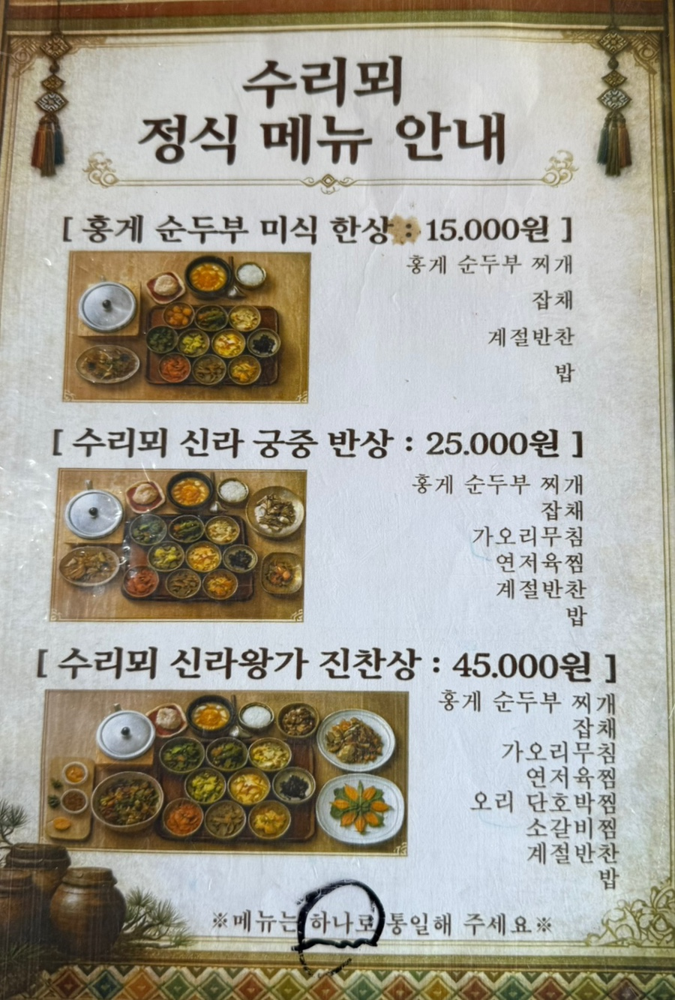
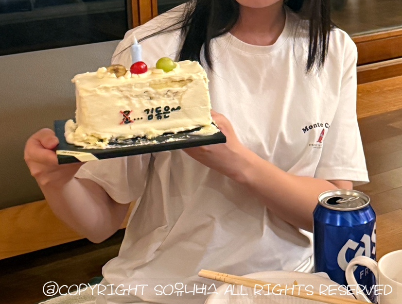
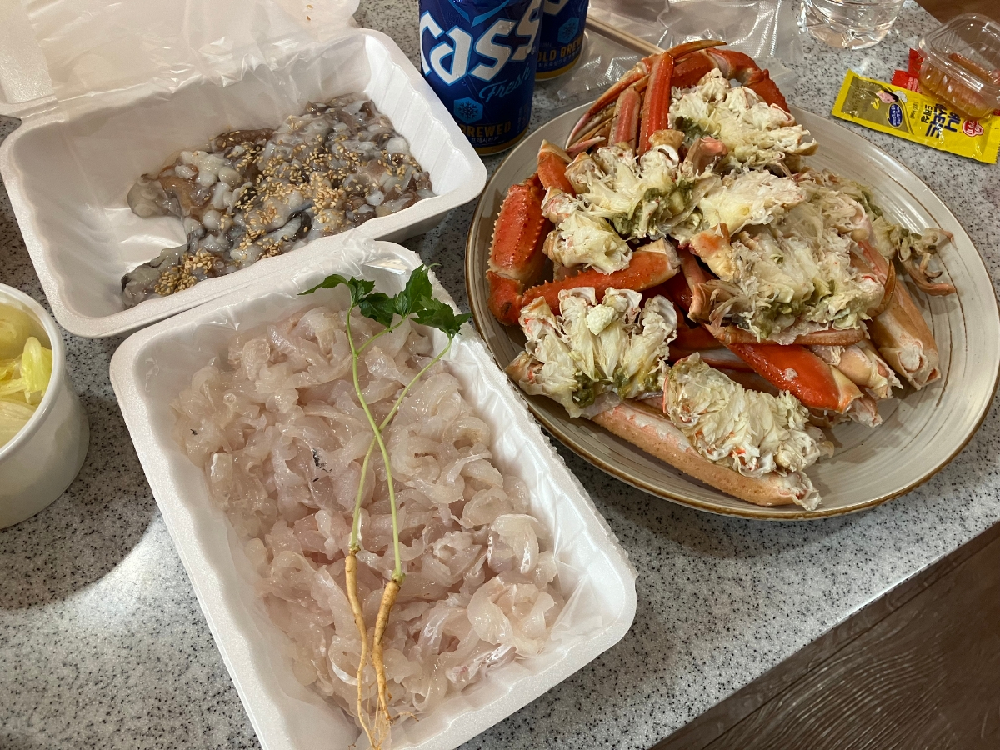
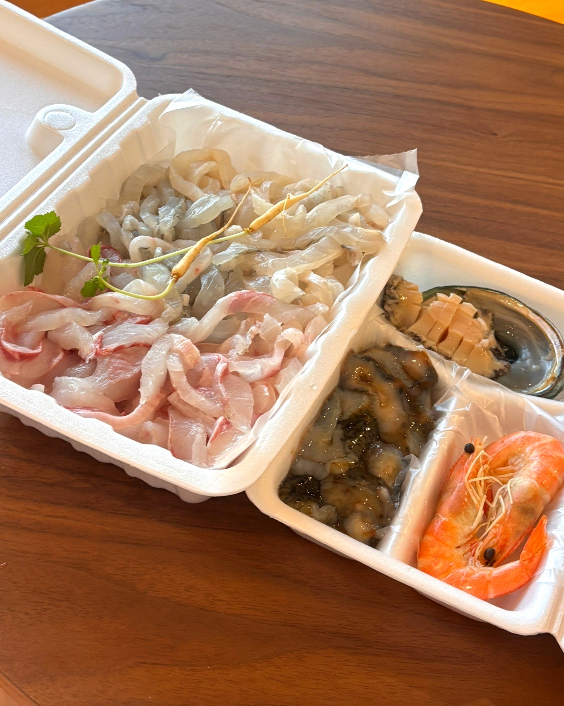
감포항 수협활어직판장 내 위치한 회·대게 전문점입니다. 살이 꽉 찬 붉은 대게와 싱싱한 활어 모듬회를 정성껏 쪄서 깔끔하게 포장해 줍니다. 컨디션 최상인 숙소 '스테이 시래'로 가져와 프라메리 케이크와 함께 우리 가족만의 아늑하고 럭셔리한 환갑 만찬을 만끽하세요!
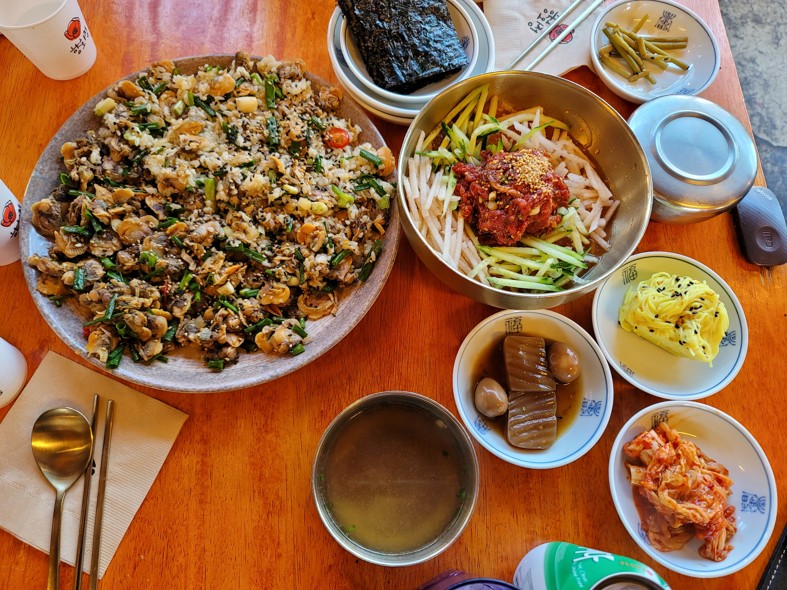
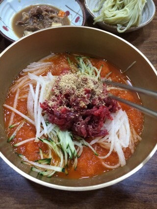
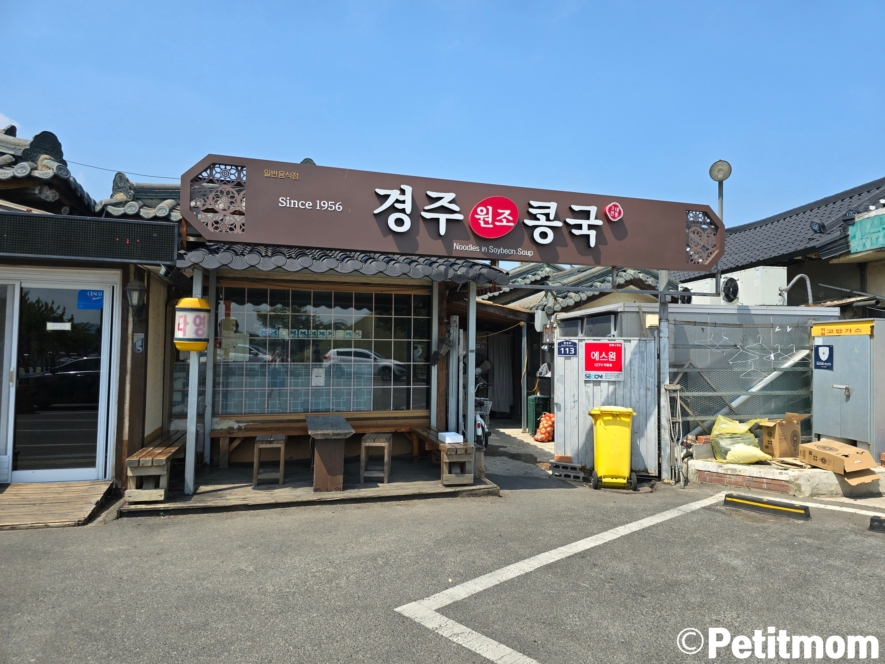
첫날 수리뫼 점심부터 15시 프라메리 케이크 픽업, 저녁 대게 파티까지 아버님을 위한 최고의 동선입니다.
조선왕조 궁중음식 이수자 명인의 전통 한옥 식당 수리뫼에서 홍게순두부 정식과 소갈비찜으로 온 가족 환영 점심 식사.
푸른 잔디 능선 사이를 거닐며 천마총을 관람하고, 첨성대 앞에서 온 가족 5명 첫 단체 기념사진 촬영.
사전 예약 완료! 프라메리 (금성로233번길 20 / 010-9597-6987)에서 아버님의 환갑을 축하하는 스페셜 맞춤 제작 레터링 케이크를 픽업합니다.
컨디션 최고인 감성 독채 한옥 스테이 시래에 짐을 풀고, 부부수산에서 미리 주문한 김이 모락모락 나는 대게찜과 싱싱한 제철 활어 모듬회 픽업!
아늑한 독채 한옥 거실에서 펼쳐지는 아빠 환갑 축하 파티! 프라메리 맞춤 케이크 촛불 점화, 대게와 싱싱한 회 만찬, 가족 롤링페이퍼 증정식.
배부른 저녁 후 달빛과 은은한 황금빛 조명이 연못에 비치는 경주 최고의 야경 감상.
숙소 툇마루에서 상쾌한 모닝 차 한 잔 후, 차로 5분 거리의 불국사로 이동하여 다보탑과 석가탑, 청운교·백운교 탐방.
보문단지 4대 전통 명가 함양집에서 새콤달콤 시원한 한우물회와 전통 육회비빔밥, 고소한 치즈불고기 만찬.
탁 트인 보문호수 호반길 산책, 82m 높이의 경주타워 전망대에서 보문단지 전경 감상 (원할 시 경주월드 나들이).
황리단길의 아기자기한 한옥 카페에서 여유로운 디저트와 가족 인생네컷 촬영, 황남샌드 쇼핑.
스테이 시래로 돌아와 툇마루에서 쏟아지는 밤하늘 별을 바라보며 도란도란 가족 담소.
2박 3일간 따뜻했던 독채 한옥을 정리하고 마당에서 마지막 가족 단체 기념사진 촬영.
경주 고유의 별미 경주원조콩국에서 찹쌀도너츠를 띄운 따뜻한 콩국과 든든한 순두부찌개로 속 편안한 브런치 식사.
가족 모두 건강과 행복을 가득 안고 아버님의 찬란한 인생 2막을 응원하며 안전하게 귀가.